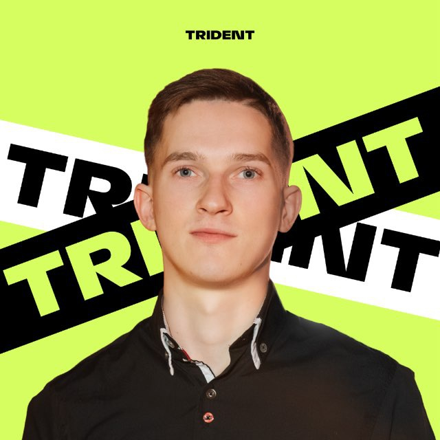

Стабільне підвищення швидкості та якості випуску сайтів у 2–3 рази, посилення команди та готовність брати відповідальність за результат — підстава для перегляду умов співпраці.

У 2–3 рази більший випуск сайтів без втрати якості. Стабільний ритм навіть під навантаженням.
Дедлайни витримуються. Запуски не зриваються. Команда та баєри впевнені у результаті.
Беру задачі на себе, мінімум контролю та правок. Менеджмент звільнений від мікроменеджменту.
Чистий код, мінімум доопрацювань, швидкий розбір складних задач без зовнішньої допомоги.
Динаміка випуску сайтів за робочий день — від базового рівня до поточного результату.
Стабільний робочий ритм без перерв на «розгойдування».
Закриті терміни без втрати якості.
До 15 сайтів за 3 години в кінці дня — за потреби.
Сайти готові тоді, коли вони потрібні баєрам. Менше очікувань — більше активних зв'язок у роботі.
Завдання не «застрягають» на етапі розробки. Команда планує наступні кроки з впевненістю.
Один спеціаліст закриває обсяг, на який раніше потрібно було більше людей або більше часу.
Менеджмент може планувати обсяги наперед, спираючись на стабільну продуктивність.
Відзначають швидкість, відповідальність та готовність працювати поза стандартним графіком, коли цього вимагає ситуація.
Терміновий обсяг, який зазвичай розподіляється на повний робочий день. Стандартний підхід — перенести на завтра. Альтернатива — закрити в день постановки без втрати якості.
Те, що випущено швидко, не повертається на доопрацювання. Чистий код економить час команди надалі.
Більшість задач закривається з першого разу.
Структуровано, передбачувано, легко підтримувати.
Розбираю самостійно, без затримок процесу.
QA отримує матеріал, готовий до запуску.
Допомагаю колегам швидше розбиратися зі складними задачами та інструментами.
Бачу, де процеси можна спростити, та виношу пропозиції на обговорення.
Темп моєї роботи задає планку та допомагає команді тримати ритм.
Це не межа. З правильним вектором та залученням можу давати ще більше цінності.
Шаблони, автоматизація рутини, скорочення часу на повторювані операції.
Робота над структурою та технічною якістю сайтів, що впливає на результати кампаній.
Готовий брати більше задач та закривати ширший фронт робіт без втрати якості.
Пропоную обговорити перегляд заробітної плати на основі реального зростання продуктивності, стабільної якості та внеску в роботу команди.